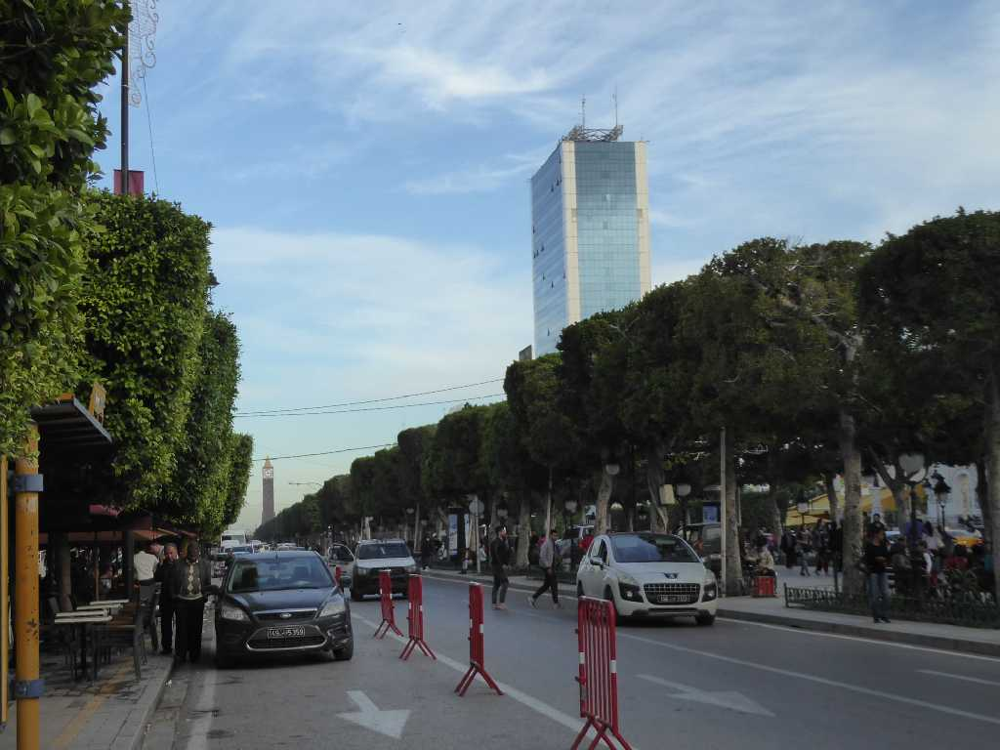
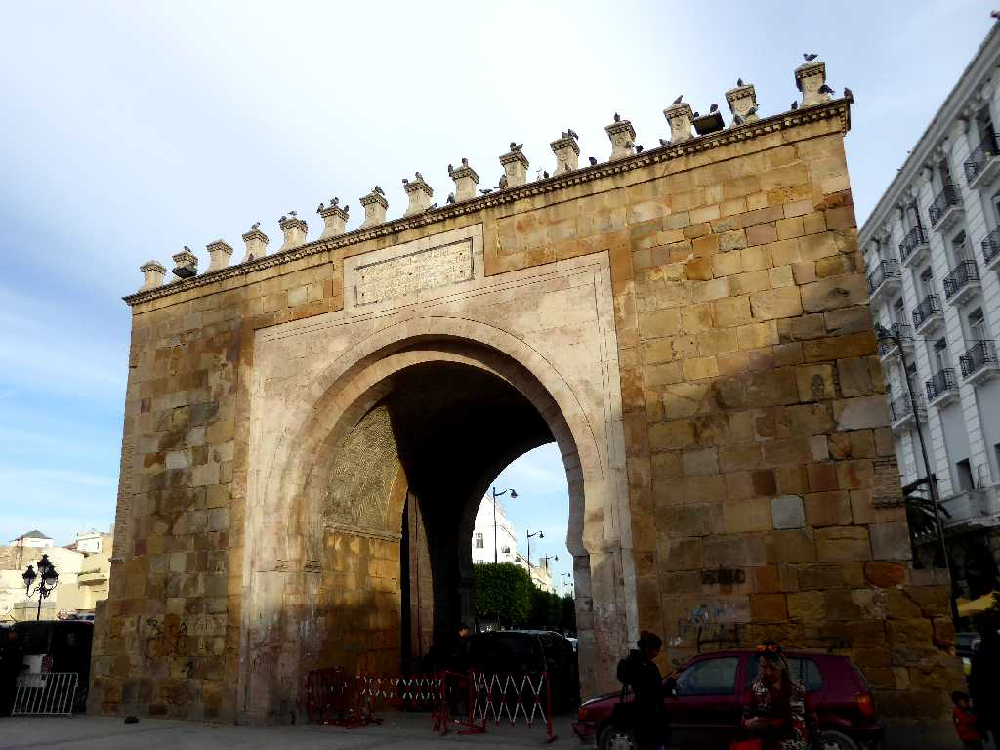
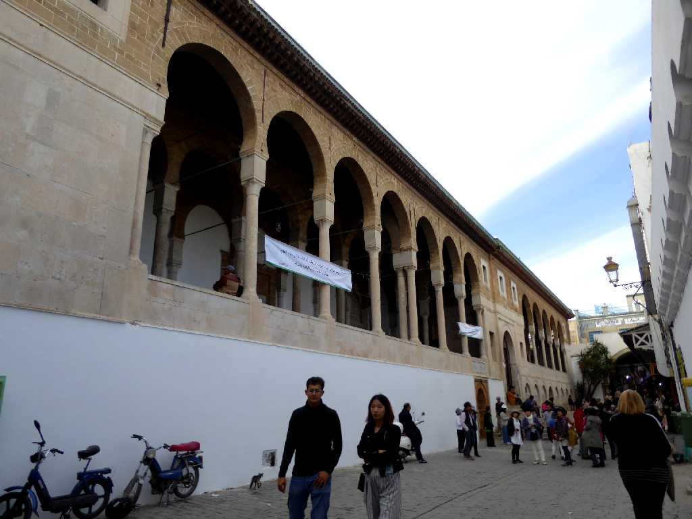
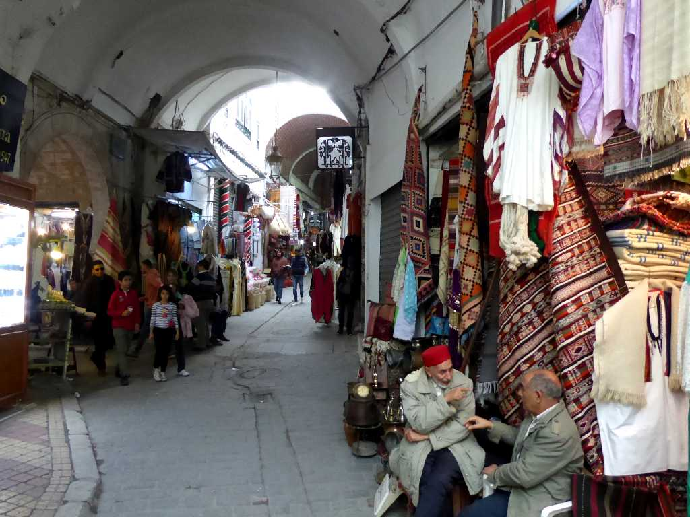
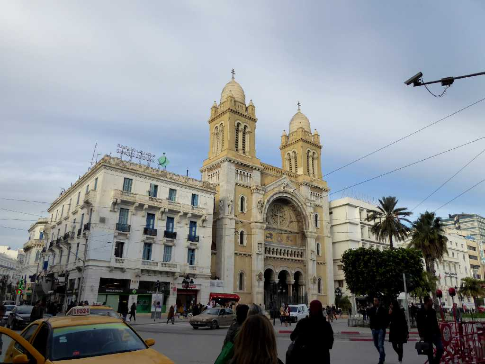
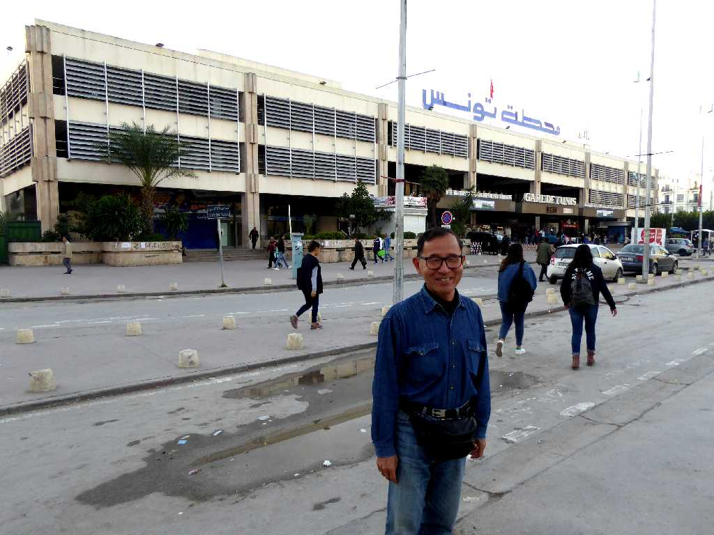

Main Street Tunis
チュニジア周遊２,０００㎞の旅がここチュニスから始まる
Night View Main Street Tunis
パリのシャンゼリゼ通りを思わせる中央通り

Bab El Bhar
旧市街地のメディナ入り口にあるチュニスのフランス門

Zaytuna Mosque Medina
チェニス旧市街のメディナ内にある９世紀に創られた最古最大のジトゥナモスク

Medina
メディナは７世紀頃からモスク付近を中心に形成され旧市街入口のフランス門付近に港があった

Cathédrale de Tunis
フランス植民地時代の１９世紀末に創られたゴシック様式とネオビザンチン様式とアラブ風様式が混在するチュニス大聖堂

November 24 2018 Gare de Tunis Tunis